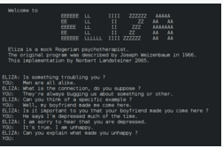

ELIZA is an early natural language processing computer program developed from 1964 to 1967 at MIT by Joseph Weizenbaum. Created to explore communication between humans and machines, ELIZA simulated conversation by using a pattern matching and substitution methodology that gave users an illusion of understanding on the part of the program, but gave no response that could be considered really understanding what was being said by either party.
Whereas the ELIZA program itself was written (originally) in MAD-SLIP, the pattern matching directives that contained most of its language capability were provided in separate "scripts", represented in a Lisp-like expression.
The most famous script, DOCTOR, simulated a psychotherapist of the Rogerian school (in which the therapist often reflects back the patient's words to the patient), and used rules, dictated in the script, to respond with non-directional questions to user inputs. As such, ELIZA was one of the first chatbots (originally "chatterbots") and one of the first programs capable of attempting the Turing test.
Weizenbaum intended the program as a method to explore communication between humans and machines. He was surprised that some people, including his secretary, attributed human-like feelings to the computer program, a phenomenon that came to be called the ELIZA effect. Many academics believed that the program would be able to positively influence the lives of many people, particularly those with psychological issues, and that it could aid doctors working on such patients' treatment. While ELIZA was capable of engaging in discourse, it could not converse with true understanding. However, many early users were convinced of ELIZA's intelligence and understanding, despite Weizenbaum's insistence to the contrary.